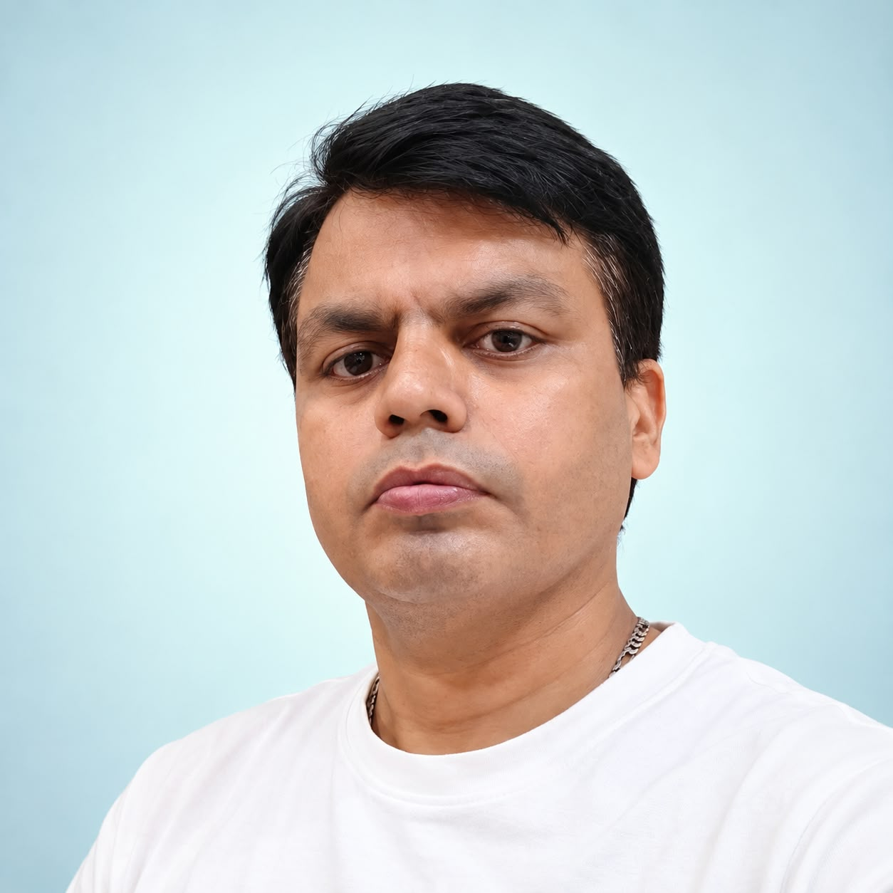

Punjabi Rewind
Hindi and Punjabi hits in an interactive, fluid-ink music experience. A browser experiment built around the songs I keep coming back to.

Batra.Office mind. Maker spirit.
Office Assistant at F.C. Sondhi & Co. Building small tools for real work, and experiments for whatever happens to catch my attention.
01 / The person
Behind the screen. My everyday work covers finance, Excel, payments, grants, scholarships and reports — the kind of work where one wrong cell at 5pm ruins an evening. Outside office hours I explore Python, Linux, APIs, software and websites, and build tools around real work. I follow NIFTY options with Flattrade and Kotak Neo, work with local language models, Ollama, OpenClaw, embeddings and NVIDIA CUDA. Beyond the screen: photography, family time, chai and music.
— Deepak, Jalandhar
02 / The work 07 experiments
Hindi and Punjabi hits in an interactive, fluid-ink music experience. A browser experiment built around the songs I keep coming back to.
A workplace attendance project. One of the tools I build around the practical needs of everyday office work.
In use, quietly improving one small thing at a time.
Experiments with locally-run language models, Ollama, OpenClaw and embeddings. I explore what local AI can actually do with NVIDIA CUDA and my own machines — no headline required.
Because running it yourself is the only way to find out what it really does.
Tools and experiments around NIFTY options, Python and APIs. I use Flattrade and Kotak Neo in my own trading workflow.
Built for my own workflow first. Everything else is a happy accident.
A Windows desktop application for managing scholarship and grant records, applicant workflows and reporting. Built end-to-end as a practical tool I actually use.
I wanted to turn a practical process into something orderly — and to learn what building real desktop software actually takes: installers, data migrations, error states and all.
Small tools and scheduled scripts that quietly remove repetitive work from the week. Mostly PowerShell, some Apps Script.
If something is repetitive and interesting enough to automate, I usually end up trying. Most of these live as small scripts that never needed a UI.
Websites I have built as experiments in design, interaction and browser-native technology. Each version is a self-imposed brief — including the one you are reading.
I like seeing how far a browser can be pushed while keeping it useful. No frameworks unless they earn their place.
The best way to understand something? Make something.
Take an idea apart. Find out how it works. Put it back together, a little more useful. That’s usually how the next project begins.
— Deepak
03 / The archive 13 frames
04 / Contact — my inbox is open
Say hello.If you have a stubborn problem, a tool that should exist, or just want to talk about local models, chai or old Punjabi songs — my inbox is open.
deepak.batra@outlook.com / +91 97797 77570